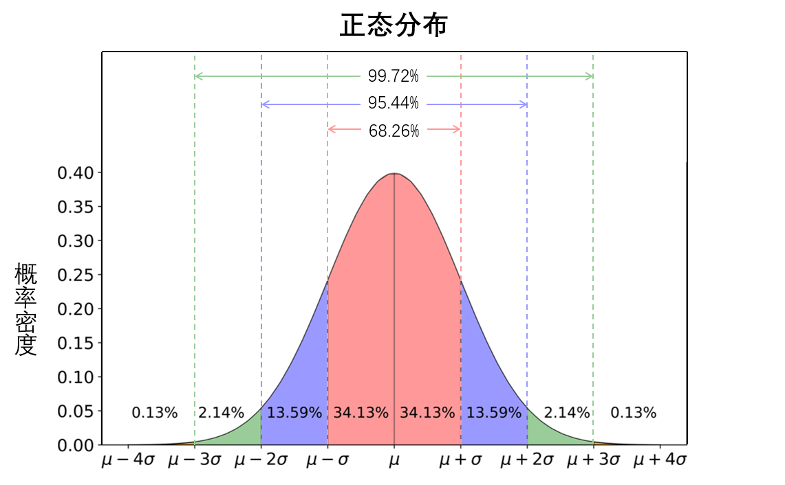
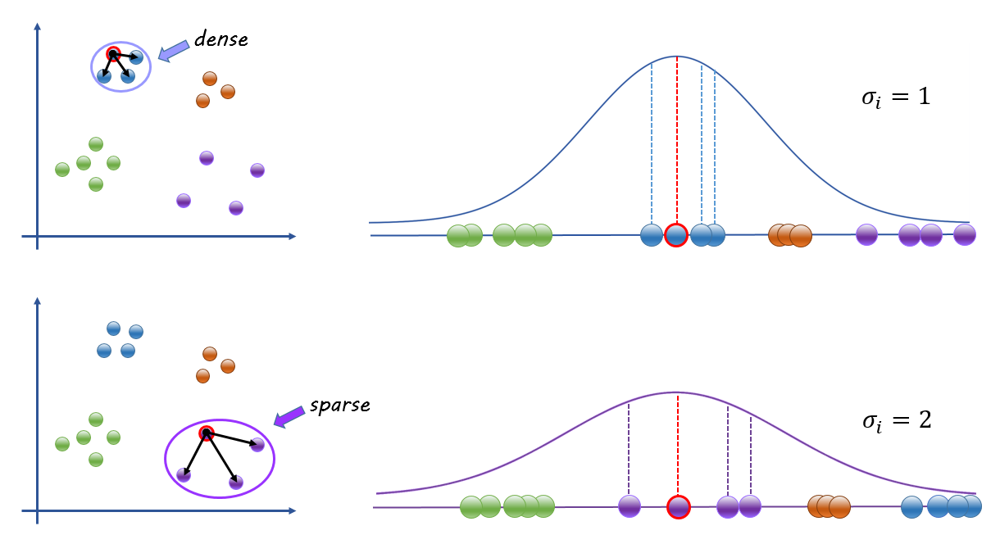
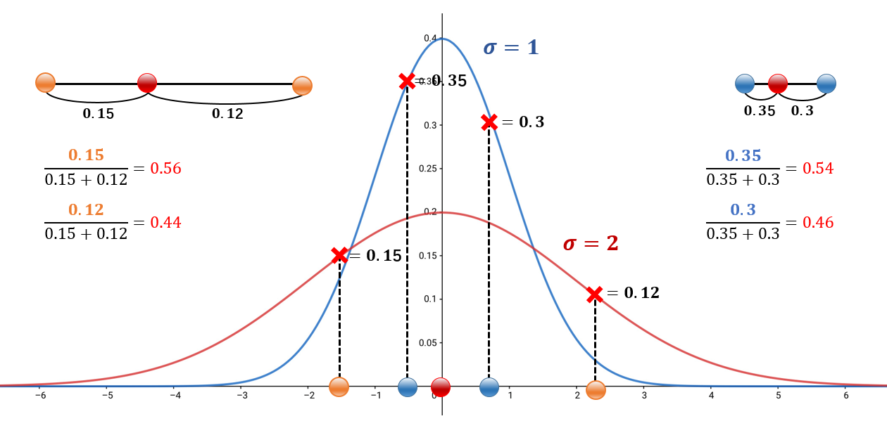
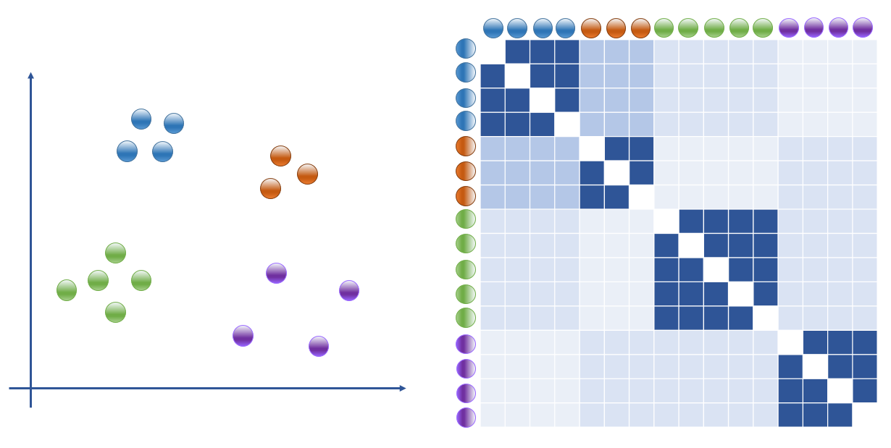

t-SNE 算法详解及应用
降维
基本算法：SNE
主要思想
在降维过程中保持数据点在原空间中的近邻关系，即高维空间中距离较小的两点投影到低维空间中的距离也应较小，而原空间中距离较大的两点在投影空间中的距离也应较大，从而在低维空间中拟合数据的大致分布结构（特别是聚类结构）。
直观地理解，两数据点距离越近，也就是该数据点在许多维度上的取值差异越小，说明它们所代表的对象之间的相似度越高。SNE就是将两点间的欧式距离转化为一个代表相似度的条件概率值，在高维和低维空间中分别进行度量，其中低维空间中最初数据点的位置是随机初始化的，得到两个分布：
- 分布1：对输入对象（即原高维数据集中的全体数据点）两两之间的相似度的度量
- 分布2：对输出对象（即投影到低维空间中的全体数据点）两两之间相似度的度量
进而采用“优化”的方法，以最小化两个分布的差异为目标，不断迭代。
算法过程
度量高维空间中数据点间相似度
那么如何将数据点间的“距离”在近邻意义下转换为“相似度”呢？怎样使远距离对应低相似度，近距离对应高相似度呢？SNE借用了正态分布的概念来解决这一问题。正态分布是自然界普遍存在的一种概率分布，如果一个事物受到多个变量的影响，不管每个变量本身符合什么分布，它们叠加后，结果的平均值就是正态分布。
正态分布的奇妙之处，就是许多看似随机的事件竟然服从一个公式就能表达的分布，如同上帝之手特意为之一般。

显然，大型高维数据集在空间中的分布大多可以看作是正态分布，准确地说，任取一个数据点作为“中心”，其他全体数据点到该点的距离应满足正态分布。而正态分布的概率密度恰好符合“到中心点（平均值）的距离越近，概率密度越大”的直觉，SNE就是以正态分布的密度函数为原型，逐步完成对两点间“相似度”的定义。
正态分布密度函数（其中，$\mu$为正态分布的期望，$\sigma$为正态分布的标准差）：
首先，对 $(x-\mu)^{2}/2 \sigma^{2}$ 这一项进行改造，原 $(x-\mu)^{2}$ 表示数据值到期望值的距离平方，按照我们的建模意义改造为 $|x{j}-x{i}|^{2}$，表示任意一点$x_j$到选定的中心点$x_i$的距离平方。相应地，原标准差$\sigma$应改造为以$x_i$为中心的数据点间距离的正态分布的标准差$\sigma_i$（这一项的计算会在下文中详细说明）。得到以下公式：
根据其意义，可以理解为任意两点之间的“不相似度”。显然，两点之间的距离越远，不相似度就越高。
这里我们先对标准差$\sigma_i$有一个大致的理解，其详细的计算过程将在后文讨论。对于数据集中的每一个点，以其为中心的正态分布应该是不同的，因为数据密度在不同位置上是不同的：
- 若中心点位于较密集区域（即中心点所在簇内数据点间距较小），为了区别其他簇内数据点，使它们的相似度与中心点所在簇内数据点的相似度产生较大差距，正态分布的标准差$\sigma_i$应当较小，使其密度曲线较“窄”较“高”（如图上半部分）。
- 若中心点位于较稀疏区域（即中心点所在簇内数据点间距较大），为了保证如此大间距的簇内数据点仍能共同享有较高的相似度，正态分布的标准差$\sigma_i$应当较大，使其密度曲线较“宽”较“矮”（如图下半部分）。

也就是说计算两点相似度公式中的$\sigma_i$应当视取中心点的不同而不同，若中心点取在数据密度较大的位置处，那么$\sigma_i$应当较小，而若中心点取在数据密度较小的位置处，那么$\sigma_i$应当较大。也正因此，确定不同中心点的$\sigma_i$十分重要，计算方法需要仔细思量。
接下来，我们回到对任意两点间“相似度”的定义式的设计中。我们改造了原正态分布密度函数中最关键的一部分，并视其为对“不相似度”的度量，那么将改造完成的“不相似度”代入原正态分布密度函数替换原项，得到如下公式，就可以得到我们所期望的“相似度”的定义了吗？
仔细分析，掐指一算，事情并没有那么简单。两个重要问题浮出水面：
- 在计算数据集中任意两点间相似度时，选择哪一个点作为中心点呢？根据我们上文中对$\sigma_i$意义的分析，单纯考虑正态分布的话，似乎选择任何点作为中心点都会更倾向于只是将中心点所在簇与其他簇中的点分开。实际上，采用上式计算得到的结果，是数据集中任意点与中心点之间的相似度，中心点所在簇中点的相似度会普遍较高，而其他簇中点的相似度普遍较低。也就是说，仅选取一个中心点用上式计算相似度只会从若干个簇中有效分出一簇（即中心点所在簇），其他簇中点因为相似度相近，仍然混在一起，无法有效区分。
- 观察不同标准差的正态分布密度函数图像，不难发现，函数最值的差异会导致密集簇和稀疏簇中两点间的相似度差异。以下图为例：蓝色密集簇中点的相似度可达0.3, 0.35；而橙色稀疏簇中点的相似度只有0.12, 0.15。而这并不是我们所希望发生的情况，因为这样将使得划分簇时没有统一的标准。依然以下图为例：若指定两点间相似度大于0.2的点划归为一簇，那么橙色稀疏簇将无法被划为一簇，相反会被拆解并入其他若干相邻簇中；若指定两点间相似度大于0.1的点划归为一簇，那么蓝色密集簇中将被划入其他簇中的点。理想的结果应该是尽管不同密度的簇选取的标准差$\sigma_i$不同，但一簇内点的相似度应该基本相等。

如何解决这两个问题呢？既然选取一个中心点计算与其他点间相似度，结果为该中心点所在簇中各点的相似度明显高于其他点，也就是能够有效分出该中心点所在的一个簇；那么，我们就可以将数据集中所有点轮流作为中心点,这样一来，每选取一个中心点进行计算便可分出其所在的某个簇，当遍历完数据集中全体数据点后综合分析，就能得到完整的分簇情况。
而第二个问题的解决方案在机器学习领域已经相当成熟，称为“归一化（Normalization）”，是特征缩放（Feature Scaling）的方法之一。归一化适合对多个实例进行综合对比评价，它将各实例的各项指标的数值分别除以其总和，得到各实例的各项指标的比例水平，从而避免各项指标的具体数值大小对实例间比较的影响，使得不同量纲的的数据具备可比性。现实世界中有不少运用“归一化”的例子，比如在对比不同国家的经济结构或人口结构时，三大产业的具体产值或农村与城市人口的具体数量是不具有可比性的，因为不同国家的经济总量和人口总数是不同的，科学的对比方法应当是计算各产业占国民经济的比重，农村与城市人口占全国总人口的比例。
综上所述，我们采取轮流选取所有点作为中心点，分别计算其余点与中心点的（未缩放）相似度，并进行归一化的策略（用如下公式表达），算得缩放后的点间相似度$p_{j|i}$，以此度量数据在空间中的分布特点。
$p{j|i}$可以理解为：$x_i$选$x_j$为邻居的可能性。需要明确：邻居是根据以点$x_i$为中心的正态分布的概率密度，按比例选取的。（在以点$x_i$为中心的正态分布下，距离$x_i$越近的点，概率密度越大，被选择为邻居的可能性就越高。）由于我们只关心两点之间的相似度，且从模型意义上讲，一个点选择自己做自己的近邻这一行为并无道理，所以定义$p{i|i}=0$.

随机变量x的熵是对随机变量不确定性的度量，是对所有可能发生的事件产生的信息量的期望。
随机变量的取值个数越多，状态数也就越多，信息熵就越大，混乱程度就越大。当随机分布为均匀分布时，熵最大。
每一个$\sigma_i$都会对应一个分布$P_i$，$\sigma_i$越大，该分布的熵就越大。SNE在用户选定参数$perplexity$（混乱度）的基础上，使用二分搜索算法寻找$\sigma_i$。
度量低维空间中数据点间相似度
对于数据集中的点在低维空间中的投影，
This is copyright.